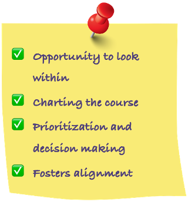

|
Research shows those most businesses that performed successfully, had a well formulated and executed strategic plan. On the other hand, those businesses not having a strategic plan and roadmap are failing more often.
For a business to be successful there needs to be a roadmap for success. Without that roadmap, which is usually the output of a strategic plan, decisions are made in a silo and confusion is prevalent.
|
|
Some key benefits of having a well thought Strategic plan from Topform Strategy:

|